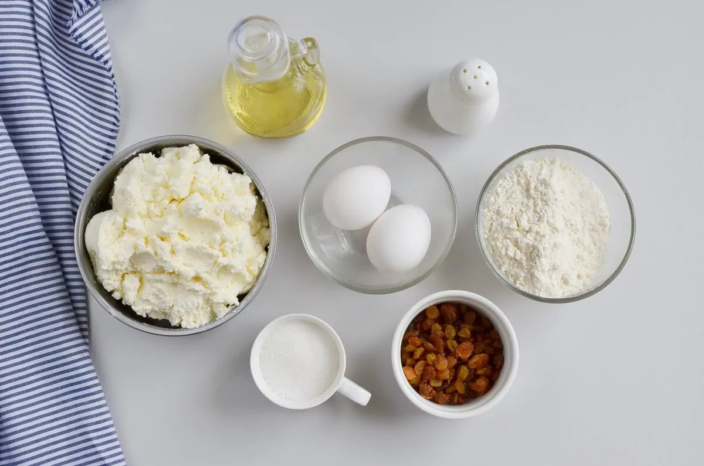

These Syrniki: Ukrainian Cheese Pancakes make for a delicious breakfast or dessert that feels
comforting and satisfying. Farmer’s cheese is the main ingredient in this recipe. Though mild in flavor,
it is packed with protein and calcium to help keep you feeling full longer and energized for a productive day.
It also brings a rich and creamy flavor to these pancakes,
which makes them taste terrific.
This recipe uses only six ingredients plus some oil for cooking and is pretty easy to make.
Start by making a batter from farmer’s cheese, eggs, flour, sugar, and salt. I like to add raisins for extra sweetness,
but you can leave them out if you prefer. Use a ¼-cup ice cream scoop to make thick pancakes and then gently flatten them
using your hands. Dredge the syrniki in flour and place them into a hot oiled skillet one by one. Cook the syrniki in
batches until golden brown. Serve warm or cold. I like to serve these Ukrainian pancakes the traditional way with sour
cream and jam. Perfect for a cozy morning! Enjoy!
Ingridients

- 1 lb Farmer's cheese
- 2 Eggs
- ½ + ⅓ cup All-purpose flour
- ¼ cup Sugar
- ½ tsp Salt
- ½ cup Raisins
For frying:
Steps to make Syrniki: Ukrainian Cheese Pancakes
- In a large bowl, place 1 pound farmer's cheese and crumble it with a fork. Add 2 eggs and mix well.
- Add ½ cup flour (reserving ⅓ cup flour for the next step), ¼ cup sugar,
and ½ teaspoon salt and mix well
until smooth with no lumps and thick. Mix in ½ cup raisins if using.
- In a shallow dish, spread ⅓ cup flour. Using a ¼-cup ice cream scoop, scoop out the syrniki mixture and drop it
directly into flour.
Gently flatten into a small patty and dredge in flour. Shake off excess and continue with the remaining batter.
- In a large skillet on medium-low heat, heat 3-4 tablespoons vegetable oil and place the syrniki
in a skillet one by one.
Cook the syrniki in batches until golden brown on both sides. Add more oil if needed to prevent from sticking.
Once cooked, transfer the syrniki to a plate lined with a paper towel to drain.
- Serve warm or cold with sour cream and jam or fresh fruit and berries.
Back to top
Back to main page